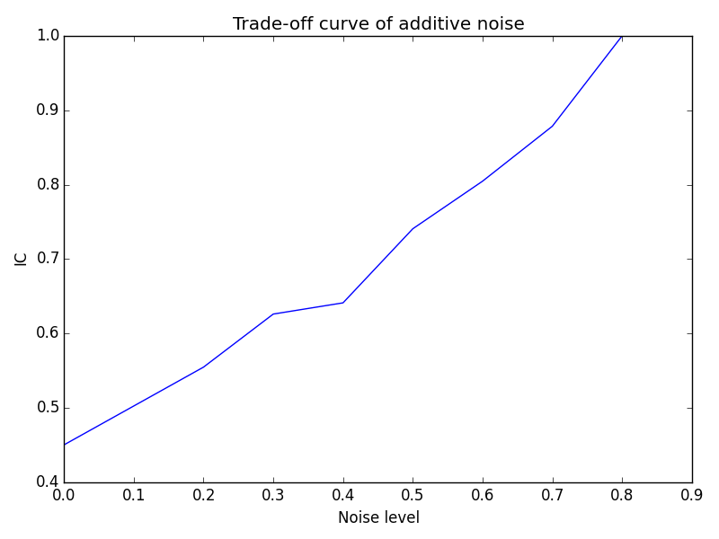

Test Scenario
In this example, we will simulate with two Primary Users on a single channel map with 0.5 km grid size. We will simulate with no countermeasure as well as all the other countermeasures with random queries. We will also show the heat map and trade-off plots for each countermeasure in the result.
Configurations
The following screenshots show the configuration process for above requirement.
First select number of channels as 1 channel and specify grid size as 1 km from the dropdown button.
Then specify two Primary Users on a rectangle area of interest.

Choose all the countermeasures, because we'd like to compare different countermeasures as well. Each countermeasure has its own value. For additive noise, 0.7 means out of ten queries, the system must lie seven times. For transfiguration 3 means the protection zone will be transfigured as a triangle. For anonymity 1 means each group will have one Primary User inside. For clustering 1 means two Primary Users in the map will be clustered as one.
We choose to include heat map in the results. It projects probability distribution inferred by the attacker on top of the Google Map. We also choose to include trade-off plots in the results so that we can compare different values for each countermeasures.
Finally we choose to use random queries only and query for 50 times.
Simulation Results
In the result email, you will receive following files and plots:
- A log file that describes the configuration you just decided
- Inaccuracy vs Queries plot
- Heat maps indication probability distribution inferred by the attacker
- Trade-off plots for each countermeasure
Inaccuracy vs Queries
This plot compares inaccuracy between different countermeasures. In this case it has following result:
Note that as number of queries increases, the inaccuracy drops. This is because the attacker gets more information with more number of queries. The higher the inaccuracy gets, the better the countermeasure performs, although its spectrum utilization is even lower. In our configuration K-Anonymity is actually the same as no countermeasure. Transfiguration is slightly effective dealing with large maps. Those three lines are close to each other, whereas the other countermeasures are quite effective.
Heat Map
The heat map is actually probability distribution inferred by the attacker. We project this data right on top of the analysis area. The color near red means the attacker thinks there is a greater probability that the associated area has a Primary User. The blue end means less probability. The transparent region means the attacker is certain that Primary User does not reside in those areas.
Trade-off Plots
Trade-off plots compares performance for the same countermeasure with different values.
In terms of additive noise,
The higher noise level gets, the better the countermeasure performs.
In terms of transfiguration, we compared values at three, four and five.
Generally three has best performance. As number of sides increases, the difference is small.
For K-Anonymity, we only have 2 PU in our map, so we compare values at 1 and 2.
When K is one, there is actually no countermeasure, when K is two, two PUs are grouped as one, so the inaccuracy is greater.
For K-Cluster, we only have 2 PU in our map, so we compare values at 1 and 2.
When K is two, there is actually no countermeasure, when K is one, two PUs are clustered as one, so the inaccuracy is greater.